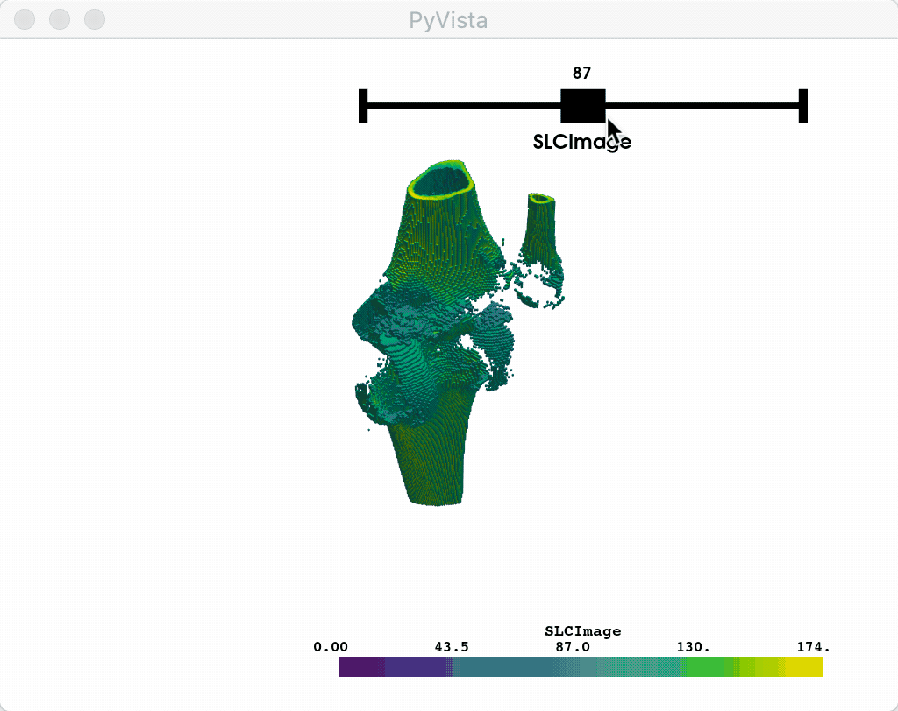
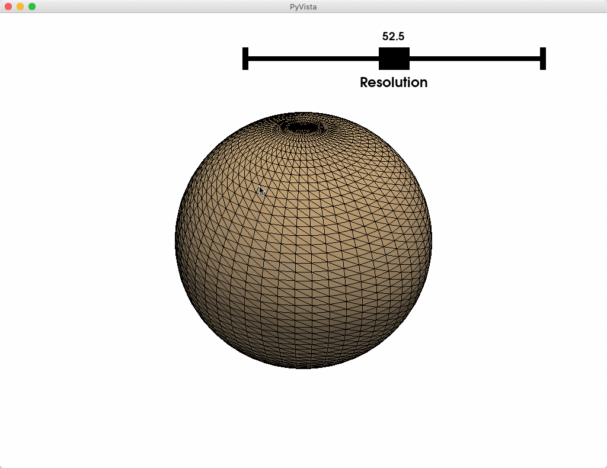

Note
Click here to download the full example code
Slider Bar Widget#
The slider widget can be enabled and disabled by the
pyvista.Plotter.add_slider_widget() and
pyvista.Plotter.clear_slider_widgets() methods respectively.
This is one of the most versatile widgets as it can control a value that can
be used for just about anything.
One helper method we’ve added is the
pyvista.Plotter.add_mesh_threshold() method which leverages the
slider widget to control a thresholding value.
import pyvista as pv
from pyvista import examples
mesh = examples.download_knee_full()
p = pv.Plotter()
p.add_mesh_threshold(mesh)
p.show()
After interacting with the scene, the threshold mesh is available as:
[UnstructuredGrid (0x15f9f2e2a60)
N Cells: 115425
N Points: 179772
X Bounds: 3.760e+01, 1.171e+02
Y Bounds: 1.446e+01, 1.338e+02
Z Bounds: 0.000e+00, 2.000e+02
N Arrays: 1
]
And here is a screen capture of a user interacting with this
Custom Callback#
Or you could leverage a custom callback function that takes a single value
from the slider as its argument to do something like control the resolution
of a mesh. Again note the use of the name argument in add_mesh:
p = pv.Plotter()
def create_mesh(value):
res = int(value)
sphere = pv.Sphere(phi_resolution=res, theta_resolution=res)
p.add_mesh(sphere, name='sphere', show_edges=True)
return
p.add_slider_widget(create_mesh, [5, 100], title='Resolution')
p.show()
And here is a screen capture of a user interacting with this
Total running time of the script: ( 0 minutes 0.795 seconds)